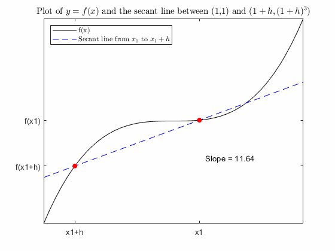
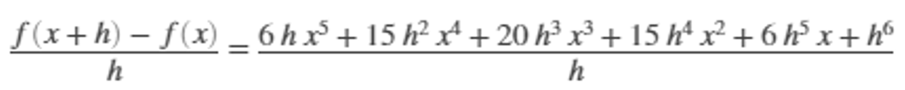
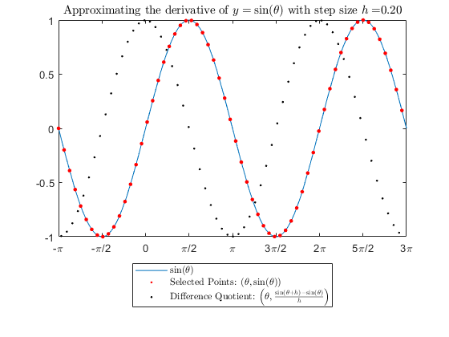
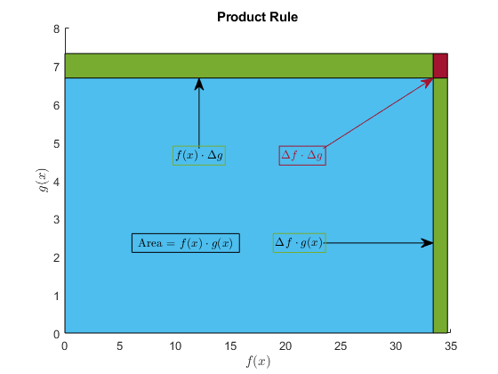
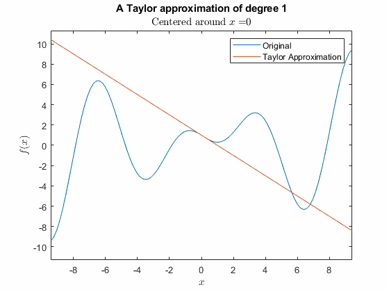
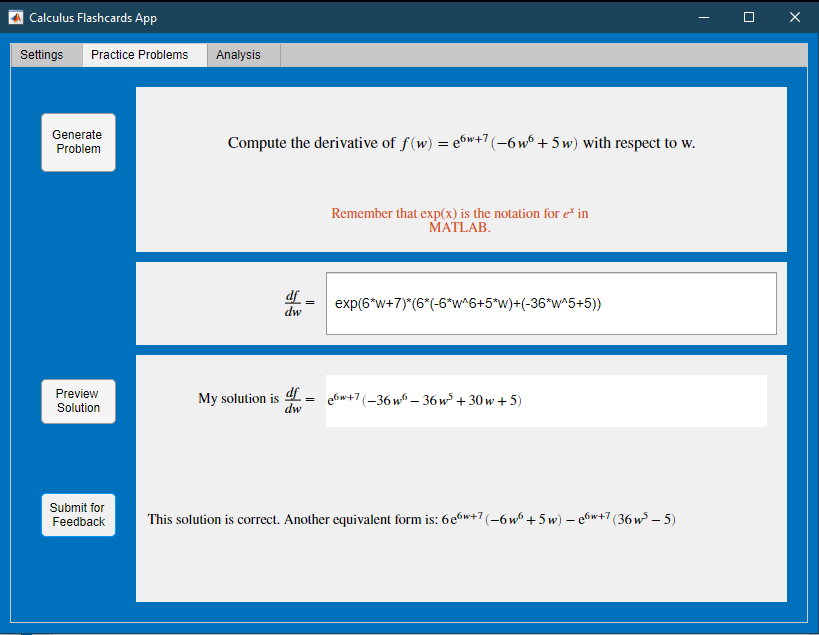

Calculus: Derivatives
Information
This curriculum module contains interactive
MATLAB® live scripts
that teach fundamental concepts and basic terminology related to derivative calculus.
There is a focus on numerical approximation and graphical representation as tools for
understanding the concepts of calculus.
Calculus: Derivatives covers the
limit definition of the derivative, the power rule and linearity,
derivatives of transcendental functions such as sines and exponentials, the
product and chain rule for derivatives, and approximations by Taylor polynomials including
tangent lines. Applications include parabolic motion, population growth, and oscillatory behavior. There is
also a Calculus Flashcards app.
You can use these live scripts as lecture demonstrations, class activities,
or interactive assignments outside class. The module is divided into five interactive scripts and one app.
The instructions inside the live scripts will guide you through the exercises and activities.
Get started with each live script by running it one section at a time. To stop running the script
or a section midway (for example, when an animation is in progress), use the Stop button in the
RUN section of the Live Editor tab in the MATLAB Toolstrip.
You can start the app from this page or by right-clicking `CalculusFlashcards.mlapp` in
the Current Folder pane and selecting "Run".
If you find an issue or have a suggestion, email the MathWorks online teaching team at
onlineteaching@mathworks.com.
Related Courseware Modules
 or
or

Prerequisites
Mathematically, this module assumes a knowledge of functions that is standard in precalculus course materials
regarding powers, exponentials, absolute values, logarithms, sines, cosines, rational functions, and
asymptotes. In addition, this module assumes basic fluency with limits in discussing the limit
definition of the derivative.
Minimal MATLAB fluency is required to use this module; primarily it is standard calculator-type mathematics
such as using * for multiplication and / for division. For commands that go beyond interacting with
a calculator, the necessary knowledge is included in the module. If you want to improve your MATLAB
knowledge, MATLAB
Onramp is a free two-hour introductory tutorial that teaches the essentials of MATLAB.
Getting Started
 Add-Ons > Get Add-Ons.
Add-Ons > Get Add-Ons.
Products
MATLAB® and the Symbolic Math Toolbox™ are used throughout. Tools from the Curve Fitting Toolbox™ are used in derivativeRulesTranscendentals.mlx.
Scripts
Organization of the Calculus: Derivatives Module
Topic
In this script, students will...
Definition of the Derivative

Power Rule for Derivatives

Derivatives of Transcendental Functions

Chain Rule and Product Rule

Approximation using Taylor Polynomials

Calculus Flashcards

Copyright 2021-2022 The MathWorks™, Inc.